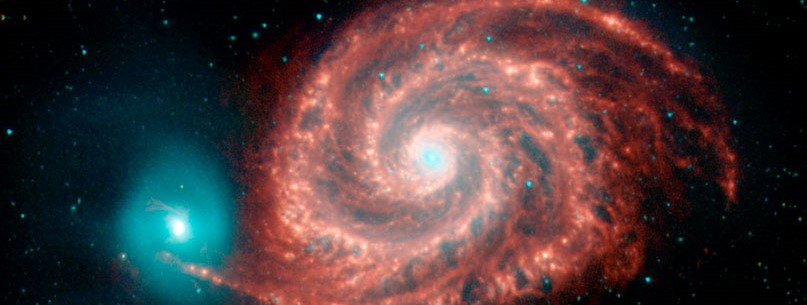

CAREER OVERVIEW
I am positive thinking and flexible electronics engineer with academically approved hobby in astrophysics. Constantly looking for a new direction of interest. Currently, I wish to continue my professional path in programming related direction.
But more importantly I wish to find my path, my inner calling and be at peace with myself. I guess it is nothing superhuman but rather human.
“Whenever you become anxious or stressed, outer purpose has taken over, and you lost sight of your inner purpose. You have forgotten that your state of consciousness is primary, all else secondary.” ― Eckhart Tolle.
SKILLS
- Python
- C++
- LabVIEW (FPGA)
- C, C++
- SQL
- Languages: English C1, Russian B2, German B2
ACADEMIC BACKGROUND
- University of Tuebingen
- Ventspils University College
- Riga Centre Humanitarian Secondary School
WORK SUMMARY
- TietoEvry | Test Engineer | tietoevry.com
- Ventspils International Radio Astronomy Center | Scientific Assistant | VIRAC
PUBLICATIONS
- "A Versatile Smoothed Particle Hydrodynamics Code for Graphic Cards", DOI: 10.1016/j.ascom.2020.100410
- "Improved LabVIEW Code Generation", Baltic J. Modern Computing, Vol. 4, No. 1, 89-97, 2016